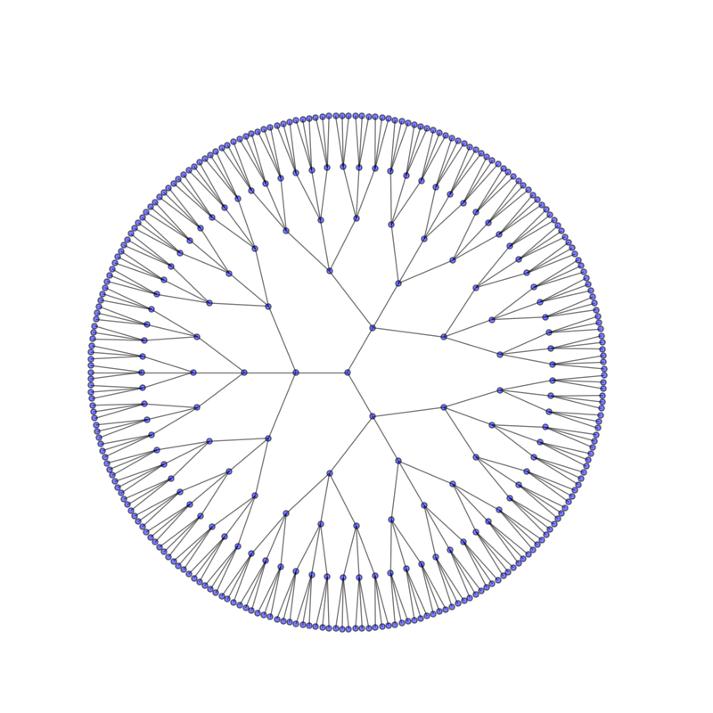

Graphviz¶
Simple¶
![digraph {
splines=true; esep=1;
a [pos="0.0,0.0!"];
b [pos="0.0,1.0!"];
c [pos="0.0,2.0!"];
a -> b;
a -> c;
b -> c;
}](../_images/graphviz-6ac276530fa60ad65cbb38cc019f8b1daac573a4.png)
Single line syntax:¶
Clickable nodes¶
![digraph {
graph [bgcolor=transparent]
node [shape=box target="_blank"]
Microchip [style=filled fillcolor="#FFD9DA" color="#FF9EA0" URL="https://www.microchip.com/"]
"SoftConsole v2021.3" [style=filled fillcolor="#CCECFF" color="#6AC0FF" URL="https://www.microsemi.com/softconsole"]
"Libero SoC v2021.3" [style=filled fillcolor="#D2ECD2" color="#96C796" URL="https://www.microsemi.com/libero"]
FlashPro [style=filled fillcolor="#E1E1E1" color="#777777" URL="https://www.microsemi.com/existing-parts/parts/152631"]
Icicle [style=filled fillcolor="#FFF7C2" color="#FFDC6D" URL="https://www.microsemi.com/products/fpga-soc/polarfire-soc-icicle-quick-start-guide"]
Microchip -> "SoftConsole v2021.3"
Microchip -> "Libero SoC v2021.3"
"SoftConsole v2021.3" -> FlashPro
"Libero SoC v2021.3" -> FlashPro
FlashPro -> Icicle
}](../_images/graphviz-e4240f588db905f469520258979bb0522d9ecded.png)
Breadcrumbs macros¶
Clusters¶
![digraph G {
graph [bgcolor=transparent]
subgraph cluster_0 {
style=filled;
style=filled fillcolor="#CCECFF" color="#6AC0FF";
node [style=filled,color=white];
a0 -> a1 -> a2 -> a3;
label = "SoftConsole";
}
subgraph cluster_1 {
style=filled;
style=filled fillcolor="#D2ECD2" color="#96C796"
node [style=filled];
b0 -> b1 -> b2 -> b3;
label = "Libero";
}
start -> a0;
start -> b0;
a1 -> b3;
b2 -> a3;
a3 -> a0;
a3 -> end;
b3 -> end;
start [shape=Mdiamond style=filled fillcolor="#E5D4EB" color="#C49ED2"];
end [shape=Msquare style=filled fillcolor="#E3D9CF" color="#BFA891"];
}](../_images/graphviz-44264016bfd4d304db4220794d94145df2a7fd7c.png)
Breadcrumbs variants¶
![digraph {
graph [rankdir="LR", ranksep=.01, bgcolor=transparent];
node [fontname="Verdana", fontsize="9", shape="rectangle", width=.1, height=.2, margin=".04,.01"];
edge [arrowhead=vee, arrowsize=.5];
"Tool Settings" -> "Cross Arm GNU C/C++ Linker" -> "General" -> "Remove unused sections (-Xlinker --gc-sections)"
}](../_images/graphviz-a333a4b339ad0601106db97076290638963e4f02.png)
Inside tabs¶
![digraph "strdducts" {
graph [bgcolor=transparent]
node [shape=record];
struct1 [shape=Mrecord, label="<f0> left|<f1> mid\ dle|<f2> right"];
struct2 [label="<f0> one|<f1> two"];
struct3 [label="hello\nworld |{ b |{c|<here> d|e}| f}| g | h"];
struct1:f1 -> struct2:f0; struct1:f2 -> struct3:here;
}](../_images/graphviz-9466fdbee11b2c0d0507b32b358eb678ae90327d.png)
Apples are green, or sometimes red.
10 11 12 13 14 | a = 2
b = a + 4
c = a + b+ a + 4
print('my 1st line')
print(f'my {a}nd line')
|
Different styles¶
![digraph {
graph [fontsize=30 labelloc="t" label="" splines=true overlap=false rankdir="LR" bgcolor=transparent]
node [style="filled" penwidth=1 fillcolor="white" fontname="Courier New" shape="Mrecord"]
edge [penwidth=5 fontsize=28 fontcolor="black"]
ratio=auto
"state0" [ style = "filled, bold" penwidth = 5 label =<<table border="0" cellborder="0" cellpadding="3" bgcolor="white"><tr><td bgcolor="black" align="center" colspan="2"><font color="white">State #0</font></td></tr><tr><td align="left" port="r0">(0) s -> •e $ </td></tr><tr><td align="left" port="r1">(1) e -> •l '=' r </td></tr><tr><td align="left" port="r2">(2) e -> •r </td></tr><tr><td align="left" port="r3">(3) l -> •'*' r </td></tr><tr><td align="left" port="r4">(4) l -> •'n' </td></tr><tr><td align="left" port="r5">(5) r -> •l </td></tr></table>> ];
"state1" [ label =<<table border="0" cellborder="0" cellpadding="3" bgcolor="white"><tr><td bgcolor="black" align="center" colspan="2"><font color="white">State #1</font></td></tr><tr><td align="left" port="r3">(3) l -> •'*' r </td></tr><tr><td align="left" port="r3">(3) l -> '*' •r </td></tr><tr><td align="left" port="r4">(4) l -> •'n' </td></tr><tr><td align="left" port="r5">(5) r -> •l </td></tr></table>> ];
"state5" [ fillcolor="black" label =<<table border="0" cellborder="0" cellpadding="3" bgcolor="black"><tr><td bgcolor="black" align="center" colspan="2"><font color="white">State #5</font></td></tr><tr><td align="left" port="r0"><font color="white">(0) s -> e •$ </font></td></tr></table>> ];
"state6" [ label =<<table border="0" cellborder="0" cellpadding="3" bgcolor="white"><tr><td bgcolor="black" align="center" colspan="2"><font color="white">State #6</font></td></tr><tr><td align="left" port="r1">(1) e -> l •'=' r </td></tr><tr><td align="left" port="r5">(5) r -> l •</td><td bgcolor="grey" align="right">$</td></tr></table>> ];
"state7" [ label =<<table border="0" cellborder="0" cellpadding="3" bgcolor="white"><tr><td bgcolor="black" align="center" colspan="2"><font color="white">State #7</font></td></tr><tr><td align="left" port="r1">(1) e -> l '=' •r </td></tr><tr><td align="left" port="r3">(3) l -> •'*' r </td></tr><tr><td align="left" port="r4">(4) l -> •'n' </td></tr><tr><td align="left" port="r5">(5) r -> •l </td></tr></table>> ];
"state8" [ label =<<table border="0" cellborder="0" cellpadding="3" bgcolor="white"><tr><td bgcolor="black" align="center" colspan="2"><font color="white">State #8</font></td></tr><tr><td align="left" port="r1">(1) e -> l '=' r •</td><td bgcolor="grey" align="right">$</td></tr></table>> ];
"state9" [ label =<<table border="0" cellborder="0" cellpadding="3" bgcolor="white"><tr><td bgcolor="black" align="center" colspan="2"><font color="white">State #9</font></td></tr><tr><td align="left" port="r2">(2) e -> r •</td><td bgcolor="grey" align="right">$</td></tr></table>> ];
state0 -> state5 [ label="e" ];
state0 -> state6 [ label="l" ];
state0 -> state9 [ label="r" ];
state0 -> state1 [ penwidth=1 fontsize=20 fontcolor="grey28" label="*" ];
state1 -> state1 [ penwidth=1 fontsize=20 fontcolor="grey28" label="*" ];
state6 -> state7 [ penwidth=1 fontsize=20 fontcolor="grey28" label="=" ];
state7 -> state8 [ label="r" ];
state7 -> state1 [ penwidth=1 fontsize=20 fontcolor="grey28" label="*" ];
}](../_images/graphviz-3dd69ab9af8f199e1005f51d7daa9d8b5d51cc0d.png)
State machine¶
![digraph finite_state_machine {
graph [bgcolor=transparent]
rankdir=LR
edge [fontsize=26]
node [shape = doublecircle, width=2.0, fontsize=24, fixedsize=true,style=filled, colorscheme=spectral5]
New [fillcolor=3]
Terminated [fillcolor=5]
node [shape=circle width=2.0 fontsize=24 fixedsize=true colorscheme=spectral5 fillcolor=2]
Runnable [fillcolor=4]
Blocked [fillcolor=1]
Waiting
"Timed\nWaiting"
New -> Runnable [label="Thread.start"]
Runnable -> Waiting [label="Object.wait"]
Runnable -> Waiting [label="Thread.sleep"]
Runnable -> Waiting [label="LockSupport.park"]
Waiting -> Blocked [label="Reacquire monitor lock after\nleaving Object.wait"]
Waiting -> Blocked [label="Spurious wake-up"]
"Timed\nWaiting" -> Blocked [label="Reaquire monitor lock after\n leaving Object.wait"]
"Timed\nWaiting" -> Terminated [label="Exception"]
"Timed\nWaiting" -> Blocked [label="Spurious wake-up"]
Runnable -> "Timed\nWaiting" [label="Object.wait"]
Runnable -> Blocked [label="Contended Monitor\nEnter"]
Blocked -> Runnable [label="Contended Monitor\nEntered"]
Runnable -> Terminated [label="Thread finishes\nexecution"]
Runnable -> Terminated [label="Exception"]
Waiting -> Runnable [label="Object.notify\nObject.notifyAll"]
Waiting -> Terminated [label="Exception"]
"Timed\nWaiting" -> Runnable [label="Object.notify\nObject.notifyAll"]
}](../_images/graphviz-2838863de4c890bf866a3f9a48587ed98d8e401b.png)
Horizontal order¶
![digraph G {
graph [bgcolor=transparent]
subgraph cluster_sa{
edge[weight=1000]
subgraph cluster_s1a{ s1a1->s1a2 }
subgraph cluster_s2a{ s2a1->s2a2 }
subgraph cluster_s1a_{ s1a1_->s1a2_ }
subgraph cluster_s2a_{ s2a1_->s2a2_ }
s1a2->s1a1_
s2a2->s2a1_
}
{
edge[constraint=false]
subgraph cluster_ta{
subgraph cluster_t1a{ t1a1->t1a2 }
subgraph cluster_t2a{ t2a1->t2a2 }
subgraph cluster_t1a_{ t1a1_->t1a2_ }
subgraph cluster_t2a_{ t2a1_->t2a2_ }
t1a2->t1a1_
t2a2->t2a1_
}
edge[tailport=s headport=s]
s1a2_->t1a1
s2a2_->t2a1
}
edge[color=green]
node[color=green]
{rank=same s1a0->s2a0->t2a0->t1a0}
s1a0->s1a1
s2a0->s2a1
t1a0->t1a2_
t2a0->t2a2_
t1a2_->t1a1_->t1a2->t1a1
t2a2_->t2a1_->t2a2->t2a1
}](../_images/graphviz-0b7b63db6c9b92e036e28379dc223836c2ec89fa.png)
Chart¶
![digraph {
graph [bgcolor=transparent]
node [fontname="Handlee" shape=rect]
edge [fontname="Handlee"]
draw [label="Search for error" style=filled fillcolor="#FFECCC" color="#FFE3B3"]
win [label="You win!" shape=oval style=filled fillcolor="#D4E2F9" color="#9CBDF2"]
guess [label="Did they\nguess it?" shape=diamond style=filled fillcolor="#EAF7DA" color="#B9E584"]
point [label="Point repeatedly\nto the same picture." style=filled fillcolor="#E5D4EB" color="#C49ED2"]
draw -> guess
win -> guess [label="Yes" dir=back]
point:s -> guess:s
guess -> point [label="No"]
{
rank=same;
guess; point; win;
}
}](../_images/graphviz-c600e1e0ec6012ce6426d6ef9f097ac138513886.png)
Generate graphs with python¶
import networkx as nx
import matplotlib.pyplot as plt
try:
from networkx import graphviz_layout
except ImportError:
raise ImportError("This example needs Graphviz and either PyGraphviz or Pydot")
G=nx.balanced_tree(3,5)
pos=nx.graphviz_layout(G,prog='twopi',args='')
plt.figure(figsize=(8,8))
nx.draw(G,pos,node_size=20,alpha=0.5,node_color="blue", with_labels=False)
plt.axis('equal')
plt.savefig('circular_tree.png')
plt.show()

Matrix¶
![digraph G { bgcolor="yellow:red"
subgraph cluster1 {fillcolor="blue:green" style="filled"
node [shape=diamond fillcolor="gold:brown" style="radial" gradientangle=180]
a0 [label=<
<TABLE border="10" cellspacing="10" cellpadding="10" style="rounded" bgcolor="/rdylgn11/1:/rdylgn11/11" gradientangle="315">
<TR><TD border="3" bgcolor="/rdylgn11/1:/rdylgn11/2">00</TD>
<TD border="3" bgcolor="/rdylgn11/2:/rdylgn11/3">01</TD>
<TD border="3" bgcolor="/rdylgn11/3:/rdylgn11/4">02</TD>
<TD border="3" bgcolor="/rdylgn11/4:/rdylgn11/5">03</TD>
</TR>
<TR><TD border="3" bgcolor="/rdylgn11/1:/rdylgn11/6" gradientangle="270">10</TD>
<TD border="3" rowspan="2" bgcolor="/rdylgn11/3:/rdylgn11/9" gradientangle="270">11</TD>
<TD border="3" bgcolor="/rdylgn11/3:/rdylgn11/8" gradientangle="270">12</TD>
<TD border="3" bgcolor="/rdylgn11/4:/rdylgn11/9" gradientangle="270">13</TD>
</TR>
<TR><TD border="3" bgcolor="/rdylgn11/6:/rdylgn11/9" gradientangle="270">20</TD>
<TD border="3" colspan="2" bgcolor="/rdylgn11/9:/rdylgn11/11">22</TD>
</TR>
<TR><TD border="3" style="radial" bgcolor="/rdylgn11/1:/rdylgn11/8">30</TD>
<TD border="3" style="radial" bgcolor="/rdylgn11/1:/rdylgn11/8" gradientangle="45">31</TD>
<TD border="3" style="radial" bgcolor="/rdylgn11/1:/rdylgn11/8" gradientangle="90" >32</TD>
<TD border="3" style="radial" bgcolor="/rdylgn11/1:/rdylgn11/8" gradientangle="180">33</TD>
</TR>
</TABLE>>];
}
}](../_images/graphviz-2fdca48d930bc40ee991a153e4eb5645565540d1.png)
Kernel¶
![digraph matrix {
graph [newrank=true,
nodesep=0.1,
overlap=true,
ranksep=0.1,
splines=false,
nodesep=0.3,
ranksep=0.2,
bgcolor="transparent"
];
node [fixedsize=false,
fontname="Ubuntu"
fontsize=24,
height=1,
shape=box,
style="filled,setlinewidth(6)",
width=2.2
];
edge [arrowhead=none,
arrowsize=0.5,
style=invis,
labelfontname="Ubuntu",
weight=10
];
{
node [color="#e27dd6ff"];
system_ [color="#e27dd6ff",
fixedsize=true,
height=0,
shape="",
style=invis,
width=0];
system [color="#e27dd6ff",
fillcolor=white,
fixedsize=true,
height=0.6,
row=func,
width=2];
system -> system_ [arrowhead="",
color="#e27dd6ff",
row=func,
style="filled,setlinewidth(6)"];
SCI [color="#e27dd6ff",
fillcolor="#d9e7ee",
fixedsize=true,
label="System calls",
row=usr,
shape=ellipse];
sysfs [color="#e27dd6ff",
fillcolor="#b2d3e4",
label="proc, sysfs,\nfile systems"];
SCI -> sysfs [color="#e27dd6ff",
style="filled,setlinewidth(6)"];
DM [color="#e27dd6ff",
fillcolor="#91b5c9",
fixedsize=true,
fontsize=20,
height=0.8,
label="Device\nModel",
shape=octagon,
width=2];
sysfs -> DM [color="#e27dd6ff",
style="filled,setlinewidth(6)"];
log_sys [color="#e27dd6ff",
fillcolor="#6a9ab1",
fontsize=20,
label="system run,\nmodules,\ngeneric\nHW access "];
DM -> log_sys [color="#e27dd6ff",
style="filled,setlinewidth(6)"];
bus_drv [color="#e27dd6ff",
fillcolor="#71809b",
label="bus drivers"];
log_sys -> bus_drv [color="#e27dd6ff",
style="filled,setlinewidth(6)"];
H2 [color="#e27dd6ff",
fillcolor="#777777",
fontcolor=white,
fontsize=20,
label="busess:\nPCI, USB ...",
row=chip];
bus_drv -> H2 [color="#e27dd6ff",
style="filled,setlinewidth(6)"];
}
{
node [color="#61c2c5"];
edge [color="#61c2c5"];
networking_ [color="#61c2c5",
fixedsize=true,
height=0,
shape="",
style=invis,
width=0];
networking [color="#61c2c5",
fillcolor=white,
fixedsize=true,
height=0.6,
row=func,
width=2];
networking -> networking_ [arrowhead="",
color="#61c2c5",
row=func,
style="filled,setlinewidth(6)"];
sock [color="#61c2c5",
fillcolor="#d9e7ee",
fixedsize=true,
label=Sockets,
row=usr,
shape=ellipse];
prot_fam [color="#61c2c5",
fillcolor="#b2d3e4",
label="protocol\nfamilies"];
sock -> prot_fam [color="#61c2c5",
style="filled,setlinewidth(6)"];
log_prot [color="#61c2c5",
fillcolor="#6a9ab1",
label="protocols:\nTCP, UDP, IP"];
prot_fam -> log_prot [color="#61c2c5",
style="filled,setlinewidth(6)"];
netif [color="#61c2c5",
fillcolor="#71809b",
fontsize=20,
label="network\ninterfaces\nand drivers"];
log_prot -> netif [color="#61c2c5",
style="filled,setlinewidth(6)"];
net_hw [color="#61c2c5",
fillcolor="#777777",
fontcolor=white,
fontsize=20,
label="network:\nEthernet, WiFi ...",
row=chip];
netif -> net_hw [color="#61c2c5",
style="filled,setlinewidth(6)"];
NFS [color="#8383cc",
fillcolor="#91b5c9",
fixedsize=true,
height=0.8,
label=NFS,
shape=octagon,
width=1.2];
NFS -> log_prot [color="#61c2c5",
style="filled,setlinewidth(6)",
weight=0];
}
{
node [color="#8383cc"];
edge [color="#8383cc"];
NFS;
storage_ [color="#8383cc",
fixedsize=true,
height=0,
shape="",
style=invis,
width=0];
storage [color="#8383cc",
fillcolor=white,
fixedsize=true,
height=0.6,
row=func,
width=2];
storage -> storage_ [arrowhead="",
color="#8383cc",
row=func,
style="filled,setlinewidth(6)"];
FS [color="#8383cc",
fillcolor="#d9e7ee",
fixedsize=true,
label="files and\ndirectories",
row=usr,
shape=ellipse];
VFS [color="#8383cc",
fillcolor="#b2d3e4",
label="Virtual\nFile System"];
FS -> VFS [color="#8383cc",
style="filled,setlinewidth(6)"];
VFS -> NFS [color="#8383cc",
style="filled,setlinewidth(6)",
weight=0];
logFS [color="#8383cc",
fillcolor="#6a9ab1",
fontsize=20,
label="logical\nfilesystems:\next3, xfs ..."];
VFS -> logFS [color="#8383cc",
style="filled,setlinewidth(6)"];
PC [color="#51bf5b",
fillcolor="#91b5c9",
fixedsize=true,
fontsize=20,
height=0.8,
label="page\ncache",
shape=octagon,
width=1.2];
VFS -> PC [color="#8383cc",
style="filled,setlinewidth(6)",
weight=0];
mmap [color="#51bf5b",
fillcolor="#91b5c9",
fixedsize=true,
fontsize=20,
height=0.8,
label="memory\nmapping",
shape=octagon,
width=2];
VFS -> mmap [color="#8383cc",
style="filled,setlinewidth(6)",
weight=0];
block [color="#8383cc",
fillcolor="#71809b",
fontsize=20,
label="Block\ndevices\nand drivers"];
logFS -> block [color="#8383cc",
style="filled,setlinewidth(6)"];
PA [color="#51bf5b",
fillcolor="#71809b",
label="Page\nAllocator"];
PC -> PA [color="#51bf5b",
style="filled,setlinewidth(6)",
weight=0];
H4 [color="#8383cc",
fillcolor="#777777",
fontcolor=white,
fontsize=20,
label="storage devices:\nSCSI, NVMe ...",
row=chip];
block -> H4 [color="#8383cc",
style="filled,setlinewidth(6)"];
SW [color="#8383cc",
fillcolor="#91b5c9",
fixedsize=true,
label=Swap,
height=0.8,
shape=octagon,
width=1.2];
SW -> block [color="#8383cc",
style="filled,setlinewidth(6)",
weight=0];
}
{
node [color="#c46747",
style="filled,setlinewidth(6)"
];
edge [color="#c46747"];
processing_ [color="#c46747",
fixedsize=true,
height=0,
shape="",
style=invis,
width=0];
processing [color="#c46747",
fillcolor=white,
fixedsize=true,
height=0.6,
row=func,
width=2];
processing -> processing_ [arrowhead="",
color="#c46747",
row=func,
style="filled,setlinewidth(6)"];
proc [color="#c46747",
fillcolor="#d9e7ee",
fixedsize=true,
label=Processes,
row=usr,
shape=ellipse];
Tasks [color="#c46747",
fillcolor="#b2d3e4"];
proc -> Tasks [color="#c46747",
style="filled,setlinewidth(6)"];
sync [color="#c46747",
fillcolor="#91b5c9",
fixedsize=true,
fontsize=20,
fontname="Ubuntu Condensed"
label=synchronization,
height=0.7,
width=2,
shape=octagon];
Tasks -> sync [color="#c46747",
style="filled,setlinewidth(6)"];
sched [color="#c46747",
fillcolor="#6a9ab1",
label=Scheduler];
sync -> sched [color="#c46747",
style="filled,setlinewidth(6)"];
IRQ [color="#c46747",
fillcolor="#71809b",
fontsize=20,
label="interrupts\ncore,\nCPU arch"];
sched -> IRQ [color="#c46747",
style="filled,setlinewidth(6)"];
CPU [color="#c46747",
fillcolor="#777777",
fontcolor=white,
fontsize=20,
row=chip];
IRQ -> CPU [color="#c46747",
style="filled,setlinewidth(6)"];
}
{
node [color="#cfbf57ff",
style="filled,setlinewidth(6)"
];
edge [color="#cfbf57ff",
weight=10
];
HI_ [color="#cfbf57ff",
fixedsize=true,
height=0,
shape="",
style=invis,
width=0];
HI [color="#cfbf57ff",
fillcolor=white,
fixedsize=true,
fontsize=20,
height=0.6,
label="human\ninterface",
row=func,
width=2];
HI -> HI_ [arrowhead="",
color="#cfbf57ff",
row=func,
style="filled,setlinewidth(6)"];
char [color="#cfbf57ff",
fillcolor="#d9e7ee",
fixedsize=true,
label="char\ndevices",
row=usr,
shape=ellipse];
input [color="#cfbf57ff",
fillcolor="#b2d3e4",
label="input\nsubsystem"];
char -> input [color="#cfbf57ff",
style="filled,setlinewidth(6)"];
F7 [color="#cfbf57ff",
fillcolor="#6a9ab1",
label="HI class\ndrivers"];
input -> F7 [color="#cfbf57ff",
style="filled,setlinewidth(6)"];
HID [color="#cfbf57ff",
fillcolor="#71809b",
fontsize=20,
URL="https://www.kernel.org/doc/html/latest/hid/",
label="HI\nperipherals\ndrivers"];
F7 -> HID [color="#cfbf57ff",
style="filled,setlinewidth(6)"];
H7 [color="#cfbf57ff",
fillcolor="#777777",
fontcolor=white,
fontsize=20,
label="display, keyboard,\nmouse, audio",
row=chip];
HID -> H7 [color="#cfbf57ff",
style="filled,setlinewidth(6)"];
}
{
graph [rank=same];
edge [style=invis,
weight=1
];
system;
networking;
system -> networking [weight=1];
storage;
networking -> storage [weight=1];
memory [color="#51bf5b",
fillcolor=white,
fixedsize=true,
height=0.6,
row=func,
width=2];
storage -> memory [weight=1];
processing;
HI;
processing -> HI [weight=1];
memory -> processing [weight=1];
functions_ [fixedsize=true,
height=0,
shape="",
style=invis,
width=0];
functions_ -> system [weight=1];
functions [color=gray,
tooltip="Columns represent main functionalities of the kernel",
URL="http://www.makelinux.net/ldd3/chp-1-sect-2.shtml",
fillcolor=gray,
fixedsize=true,
height=0.6,
row=func,
style=dashed,
width=1.6];
functions -> functions_ [arrowhead="",
color=gray,
style="",
weight=""];
}
{
graph [rank=same];
SCI;
sock;
FS;
proc;
char;
usr_ [fixedsize=true,
height=0,
shape="",
style=invis,
width=0.5];
usr [fillcolor="#d9e7eeff",
fixedsize=true,
label="user space\ninterfaces",
row=usr,
shape=ellipse,
style="filled,setlinewidth(0)"];
MA [color="#51bf5b",
fillcolor="#d9e7ee",
fixedsize=true,
label="memory\naccess",
row=usr,
shape=ellipse];
}
{
edge [style=invis,
weight=10
];
system_;
SCI;
system_ -> SCI;
networking_;
sock;
networking_ -> sock;
storage_;
FS;
storage_ -> FS;
processing_;
proc;
processing_ -> proc;
HI_;
char;
HI_ -> char;
MA;
memory_ [fixedsize=true,
height=0,
shape="",
style=invis,
width=0];
memory_ -> MA;
}
{
graph [rank=same];
sysfs;
prot_fam;
VFS;
Tasks;
input;
D0 [fixedsize=true,
height=0,
shape="",
style=invis,
width=0];
virt [fillcolor="#b2d3e4",
label="virtual\nsubsystems",
style="filled,setlinewidth(0)"];
VM [color="#51bf5b",
fillcolor="#b2d3e4",
label="Virtual\nmemory"];
}
{
graph [rank=same];
DM;
NFS;
mmap;
sync;
E0 [fixedsize=true,
height=0,
shape="",
style=invis,
width=0];
bridges [fillcolor="#91b5c9",
shape=octagon,
style="filled,setlinewidth(0)"];
}
{
graph [rank=same];
log_sys;
log_prot;
logFS;
sched;
F7;
F0 [fixedsize=true,
height=0,
shape="",
style=invis,
width=0];
logical [fillcolor="#6a9ab1",
style="filled,setlinewidth(0)"];
log_mem [color="#51bf5b",
fillcolor="#6a9ab1",
label="logical\nmemory"];
}
{
graph [rank=same];
bus_drv;
netif;
block;
PA;
IRQ;
HID;
G0 [fixedsize=true,
height=0,
shape="",
style=invis,
width=0];
HWI [fillcolor="#71809b",
label="hardware\ninterfaces",
style="filled,setlinewidth(0)"];
}
{
graph [rank=same];
H2;
net_hw;
H4;
CPU;
H7;
H0 [fixedsize=true,
height=0,
shape="",
style=invis,
width=0];
HW [fillcolor="#777777",
fontcolor=white,
label="electronics,\nhardware",
row=chip,
style="filled,setlinewidth(0)"];
H5 [color="#51bf5b",
fillcolor="#777777",
fontcolor=white,
fontsize=20,
label="MMU, RAM",
row=chip];
}
subgraph mem {
node [color="#51bf5b",
height=0.5
];
edge [color="#51bf5b"];
PC;
mmap;
SW;
mmap -> SW [color="#51bf5b",
style="filled,setlinewidth(6)",
weight=0];
log_mem;
mmap -> log_mem [color="#51bf5b",
style="filled,setlinewidth(6)"];
PA;
H5;
PA -> H5 [color="#51bf5b",
style="filled,setlinewidth(6)"];
memory;
memory_;
memory -> memory_ [arrowhead="",
color="#51bf5b",
row=func,
style="filled,setlinewidth(6)"];
MA;
VM;
MA -> VM [color="#51bf5b",
style="filled,setlinewidth(6)"];
VM -> mmap [color="#51bf5b",
style="filled,setlinewidth(6)"];
log_mem -> PA [color="#51bf5b",
style="filled,setlinewidth(6)"];
}
layers [fillcolor=lightgray,
tooltip="Functionalities are divided to common layers. It is approximate division.",
height=0.1,
style="filled,setlinewidth(0)",
width=0.5];
functions -> layers;
usr -> usr_ [arrowhead="",
color="#d9e7eeff",
minlen=2,
style="filled,setlinewidth(6)"];
usr -> virt [color="#d9e7eeff",
style="filled,setlinewidth(6)"];
virt -> D0 [arrowhead="",
color="#b2d3e4",
minlen=2,
style="filled,setlinewidth(6)"];
virt -> bridges [color="#b2d3e4",
style="filled,setlinewidth(6)"];
bridges -> E0 [arrowhead="",
color="#91b5c9",
minlen=2,
style="filled,setlinewidth(6)",
weight=""];
bridges -> logical [color="#91b5c9",
style="filled,setlinewidth(6)"];
logical -> F0 [arrowhead="",
color="#6a9ab1",
minlen=2,
row=logical,
style="filled,setlinewidth(6)",
weight=""];
logical -> HWI [color="#6a9ab1",
row=logical,
style="filled,setlinewidth(6)"];
HWI -> G0 [arrowhead="",
color="#71809b",
minlen=2,
row=HWI,
style="filled,setlinewidth(6)",
weight=""];
HWI -> HW [color="#71809b",
row=HWI,
style="filled,setlinewidth(6)"];
HW -> H0 [arrowhead="",
color="#777777",
minlen=2,
row=chip,
style="filled,setlinewidth(6)",
weight=""];
layers -> usr [arrowhead="",
color=gray,
style="filled,setlinewidth(1)"];
}](../_images/graphviz-fe768ce4b6e067f3bd97dc54351f2c72db3ad800.png)